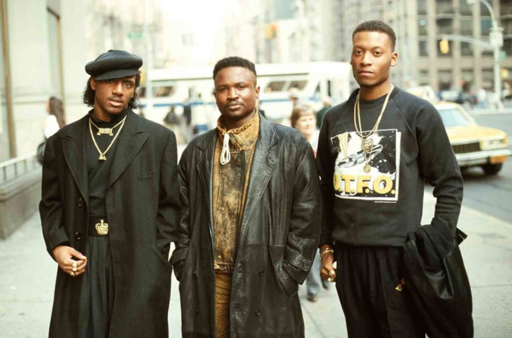
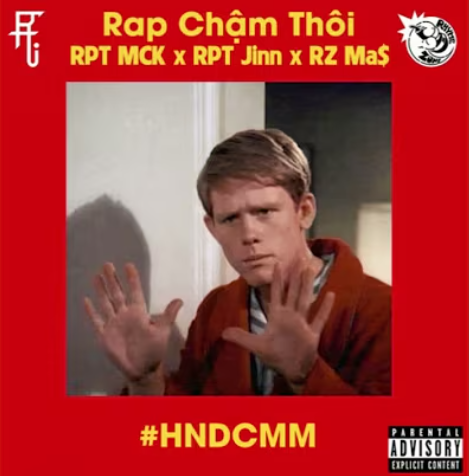

GIỚI THIỆU VỀ BEFF
- Rap beef là gì?
- Rap beef diễn ra như thế nào?
- Làm nhạc diss để làm gì?
Rap beef xuất hiện trong tiếng Anh từ giữa những năm 1990. Là một từ lóng, “beef” có nghĩa là “phàn nàn”, vì vậy rap beef có thể hiểu là các bài nhạc rap được viết để chê bai, công kích về những điểm xấu ở một người khác (thường là rapper). Tất nhiên, thể loại rap này đã xuất hiện từ những năm 1980, với trận beef đầu tiên được ghi lại xuất phát từ việc U.T.F.O.
Nhóm nhạc U.T.F.O
một nhóm rap ở Mỹ bị một DJ, một nhà sản xuất nhạc, một rapper và một cậu bé 14 tuổi công khai chỉ trích bằng một bài rap, với lý do là nhóm nhạc trên đã từ chối xuất hiện tại một show diễn mà bộ ba kia quảng bá. Lùi xa hơn nữa, beef trong âm nhạc đã xuất hiện từ năm 1962, với bài hát You Keep Her được sáng tác và thể hiện bởi Joe Tex, “dành tặng” James Brown, người đã cưới vợ cũ của anh. Ngày nay, phần đông khán giả gọi rap beef là rap battle hoặc rap diss, bởi hình thức độc đáo này của rap giờ hầu như chỉ còn tồn tại ở những cuộc thi đấu rap, nơi các rapper tỉ thí với nhau để tìm ra người chiến thắng qua cách gieo vần và nhịp flow.
Câu chuyện thường bắt đầu khi một rapper cảm thấy có ai đó đang tấn công, chỉ trích mình qua âm nhạc hay những phát ngôn của họ. Một diss track sẽ được ra đời để đáp lại sự khiêu khích này. Nếu người gây chiến trước là một rapper, họ hoàn toàn có thể (và cũng gần như chắc chắn) ra một bài nhạc đáp trả. Cứ thế, hai bên đấu qua đấu lại cho đến khi kết thúc cuộc beef.
Trận Beef giữa Acy và Rhymastic(YC)
Nếu như không phải trong một cuộc thi, thường sẽ không có luật lệ nào được quy định trong một cuộc rap beef, ngoại trừ những quy ước ngầm được cộng đồng rap thỏa thuận với nhau, tùy theo bối cảnh văn hóa, địa lý hay những yếu tố khác có liên quan. Nhìn chung, một trận rap beef có thể kết thúc bất cứ lúc nào khi một bên tuyên bố không tham gia nữa. Việc này không có nghĩa là bên đó sẽ bị xử “thua”, bởi diễn biến trận beef và tổng quan các bài rap mới là yếu tố được người nghe nói chung và người chơi rap “gạo cội” nói riêng, cũng như những người trong cuộc đánh giá.
Những cuộc beef trở thành một phần không thể thiếu của nhạc rap nói riêng và hip-hop nói chung, bởi chúng giúp các rapper cải thiện trình độ của mình. Việc phải rap trong trạng thái bức xúc, có khi là tức giận, sẽ khiến nhiều rapper thiếu kinh nghiệm mất bình tĩnh và trượt khỏi tiêu chuẩn chung của nhạc rap.
Bài Rap Chậm Thôi của RPT
Do vậy, để có một bài diss hay, các yếu tố kỹ năng vẫn phải được đảm bảo, cùng lúc đó là nội dung của bài rap phải đúng trọng tâm, khiến đối phương tâm phục khẩu phục. Nếu gặp thời, bài rap đó thậm chí có thể được bổ sung vào danh sách các ca khúc rap để đời, làm nên sự nghiệp của một ai đó (cũng như, có thể chấm dứt sự nghiệp của một người khác). Một vài trường hợp, rap beef có thể giúp hai rapper hiểu nhau hơn, từ thù hóa bạn, nhưng dĩ nhiên trường hợp này không nhiều. Khi nhạc rap đang ở trong thời kỳ được khai thác, thương mại hóa, hòa nhập vào thị trường âm nhạc Việt Nam, nhiều rapper đã bắt tay nhau và xóa bỏ những suy nghĩ đối địch trước đây để cùng nhau chung lý tưởng, cho ra những sản phẩm chất lượng phục vụ những người yêu nhạc rap. Rap và hip-hop vốn là dòng nhạc kén người nghe và chưa được công nhận chính thức trong suốt nhiều năm. Rap beef lại càng trở nên khó nghe, khó hiểu khi được đưa những chi tiết cá nhân của rapper vào bài nhạc, thậm chí cách sử dụng ngôn từ đôi khi cũng khá thô cứng và suồng sã. Tuy vậy nhạc rap hiện tại đã bắt đầu có chỗ đứng hơn, văn minh hơn khi các rapper so tài bằng âm nhạc qua lời lẽ chừng mực, không gây phản cảm, khiến cộng đồng mê rap cũng như khán giả chưa hiểu nhiều về rap beef có cái nhìn thiện cảm hơn với nét đặc trưng không thể thiếu trong thể loại nhạc này.